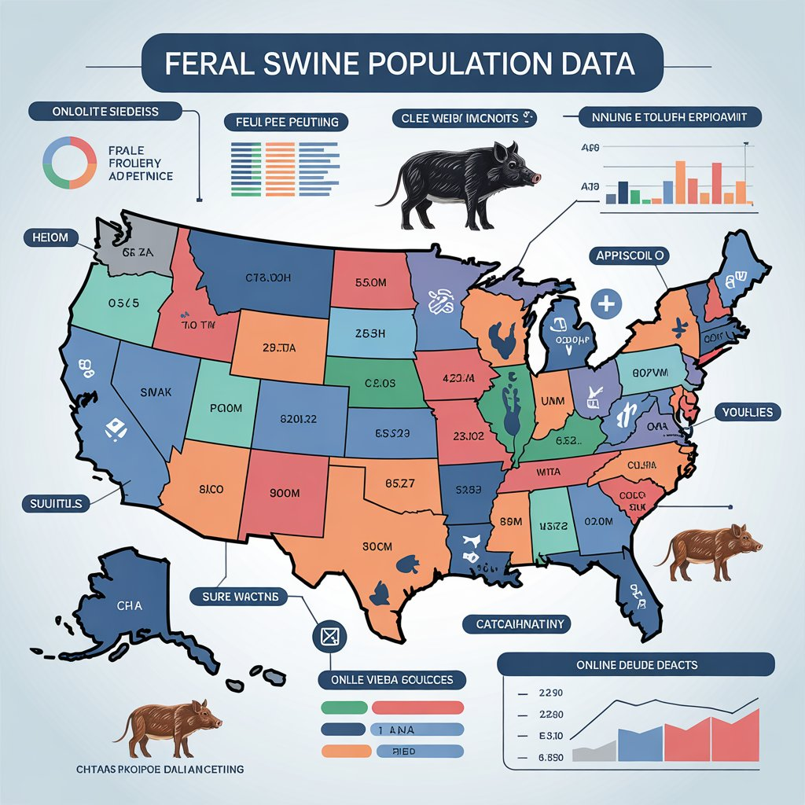

scotcorm
scotcorm
A Case Study of the Quality and Availability of Online Data about Feral Swine (Sus scrofa) population in the United States
by: Scott Cormier
This study is a brief examination of the methodological challenges and general quality of freely-available data about feral swine (Sus scrofa) population in the United States. I conducted this review with the principles of evidential culture in mind, seeking to determine if information shared freely online might qualify as a contribution to open evidential culture, and whether professional researchers operating within open or closed evidential frameworks might benefit from informal information online.
Through systematic review of publicly available data sources, including state wildlife agencies, agricultural departments, and specialized hunting resources, I identified significant inconsistencies in estimation methodologies, reporting standards, and data accessibility. Findings reveal wide variations in population reporting formats, from single-point estimates to broad numerical ranges, complicating cross-state comparisons.
I conclude that developing standardized population estimation protocols, improving coordination between state agencies, would be a worthwhile but difficult goal. To help reach that goal, universities could work together to establish best-practices that might one day be accepted as policy, by establishing transparent data sharing mechanisms like those at The University of Georgia's Center for Invasive Species and Ecosystem Health's Early Detection & Distribution Mapping System (EDDMapS). Their efforts demonstrate how researchers might effectively harness amateur contributions to draw reliable conclusions, bridging the gap between open and closed evidential cultures. and more universities should follow their example.
I began my literature review by examining publicly available resources on feral swine populations across the United States. My search focused on government agencies, university extension services, and specialized hunting resources that provide population data.
 The literature reveals a striking lack of methodological consistency in how feral swine populations are monitored and reported. While the biological and ecological dimensions of the feral swine lifecycle have received substantial scholarly attention, considerably less research has focused on the methodological challenges inherent in population monitoring and the resulting data inconsistencies. Studies have attempted to quantify feral swine populations at state or regional levels using various methodologies, including camera trapping (Massei et al., 2018), mark-recapture techniques (Hanson et al., 2008), and aerial surveys (Campbell et al., 2010). However, these approaches vary significantly in their implementation, accuracy, and geographic coverage. The resulting heterogeneity in population estimation methodologies creates substantial challenges for policymakers and wildlife managers attempting to allocate resources effectively or evaluate management success (or failure) across jurisdictional boundaries.
I have limited access to studies that can be found behind paywalls, but it seems clear that there are no consistent standards to determine how population data for feral swine should be collected, reported, and utilized across different states and agencies. This knowledge gap impedes the development of coordinated management strategies and prevents accurate assessment of population trends at regional or national scales. It also prevents researchers from effectively combining their data and perhaps reaching useful conclusions.
The USDA's Animal and Plant Health Inspection Service (APHIS) maintains some of the most comprehensive data on feral swine distribution but offers limited granularity on population sizes. State wildlife agencies vary dramatically in their approaches, with some providing detailed population estimates (Texas, Florida) while others offer only vague qualitative assessments (North Carolina, Oklahoma).
This review identified a significant gap in the literature regarding standardized methodologies for feral swine population assessment across jurisdictional boundaries, highlighting the need for improved coordination between researchers and management agencies.
 I selected feral swine (Sus scrofa (feral type) Linnaeus) as the
focus of this case study because they represent a significant
ecological and agricultural challenge in the United States, with an
estimated population exceeding 6 million. Recognized as one of the
world's most destructive invasive species, these animals pose
substantial threats to agricultural ecosystems and rural economies.
Their rapid spread across the country and the various management
approaches employed by different states make them an ideal subject
for examining how data is collected, reported, and shared across
jurisdictional boundaries.
I selected feral swine (Sus scrofa (feral type) Linnaeus) as the
focus of this case study because they represent a significant
ecological and agricultural challenge in the United States, with an
estimated population exceeding 6 million. Recognized as one of the
world's most destructive invasive species, these animals pose
substantial threats to agricultural ecosystems and rural economies.
Their rapid spread across the country and the various management
approaches employed by different states make them an ideal subject
for examining how data is collected, reported, and shared across
jurisdictional boundaries.
The case of feral swine population data is particularly suitable for investigating questions of evidential culture because it sits at the intersection of multiple stakeholder interests—including government agencies, academic researchers, agricultural producers, and recreational hunters—each with different approaches to data collection and sharing. This diversity of approaches creates natural variation in evidential standards that can be analyzed and compared.
Data for this case study was collected online, mostly from sources that are freely available to the general public. Since my goal is to show how useful data might be found online, it makes sense to look for information sources that are available to the general public whose efforts I hope to encourage.
I systematically reviewed websites of state wildlife agencies, agricultural departments, university extension services, and specialized hunting resources across states with known feral swine populations. For each source, I documented the type of population data provided, the methodology used for estimation (if disclosed), the frequency of updates, and the accessibility of raw data.
It is also useful to consider that as wild animals, feral swine are resistant to being tracked and counted, and their behaviors change when they are hunted. Falyn Owens, a wildlife biologist with the North Carolina Wildlife Resources Commission, explained that "We don't in North Carolina have a good estimate of the population of feral swine across the state because it's a really, really hard number to pin down."
What seems to be the best of the current approaches, for research purposes, relies heavily on reported observations and consistent documentation. The University of Georgia's Center for Invasive Species and Ecosystem Health's Early Detection & Distribution Mapping System (EDDMapS) offers records dated July 1, 1982, to October 30, 2024, and include validated data entered by informed observers and made freely available to everyone on their website.[4].
In my review of publicly available feral swine population data, I found striking inconsistencies across state and federal resources. The data landscape resembles a patchwork quilt of methodologies and reporting standards rather than a coherent national framework.
Texas Parks and Wildlife Department reports "about 2.6 million" feral swine, while Georgia's Department of Natural Resources provides a broad range of "200,000 to 600,000." Florida's Fish and Wildlife Conservation Commission simply states "over one-half million." These variations in reporting format—from single-point estimates to wide numerical ranges—make meaningful cross-state comparisons nearly impossible.
Terminology also varies significantly. Arkansas Department of Agriculture tracks "removal" data, while Louisiana refers to "harvesting," and Oklahoma uses "take" figures. These seemingly minor semantic differences often reflect fundamentally different data collection methodologies.
Even more concerning is the scarcity of methodological transparency. Few state agencies disclose their estimation techniques, and when they do, they rarely provide sufficient detail to evaluate reliability. North Carolina Wildlife Resources Commission candidly admits they lack a "good estimate" because it's "a really, really hard number to pin down."
Viewing this data landscape through the lens of evidential culture reveals a tension between open and closed approaches. State wildlife agencies generally operate within closed evidential frameworks—restricting access to raw data and methodological details—while hunting organizations and citizen science platforms represent more open approaches.
The University of Georgia's EDDMapS exemplifies a middle ground, utilizing citizen reports while maintaining scientific rigor through expert verification. This hybrid approach suggests that bridging open and closed evidential cultures may offer the most promising path forward.
The current fragmentation impedes effective management and research. Without standardized metrics adjusted for state size, habitat availability, and agricultural distribution, raw population figures provide an incomplete picture of invasion intensity and associated impacts.
My findings reveal that the current state of feral swine population data represents a missed opportunity for collaborative research and management. The inconsistencies I've documented don't merely reflect technical challenges in counting elusive animals—they reveal deeper divisions in evidential cultures across institutions.
This fragmentation significantly hampers our ability to develop coordinated, evidence-based management strategies. When Georgia reports "200,000 to 600,000" feral swine while neighboring Florida states "over one-half million," policymakers lack the comparable data needed to allocate resources effectively across state boundaries.
The proliferation of hunting-focused websites has paradoxically both helped and hindered public knowledge. While these sites often provide accessible and visually compelling data presentations, their scientific utility is limited by inconsistent source attribution and verification standards.
My analysis supports previous research by Campbell et al. (2010) and Hanson et al. (2008) who identified methodological inconsistencies in wildlife population monitoring. However, my findings extend this work by specifically documenting how these inconsistencies manifest in publicly available data sources across jurisdictional boundaries. The current situation creates isolated repositories of information that cannot be meaningfully integrated or understood.
The biological and behavioral characteristics of feral swine—their adaptability, nocturnal habits, and responses to hunting pressure—create inherent challenges in population estimation. However, these natural difficulties are compounded by institutional and methodological fragmentation. When Georgia reports a population range of "200,000 to 600,000" while neighboring Florida simply states "over one-half million," the utility of such figures for cross-state management planning is severely limited.
This study has several limitations worth acknowledging. First, I focused exclusively on publicly available online resources, which may not reflect the full scope of data available to wildlife managers through internal channels, or to experts in universities who have access to professional journals and data sites. Second, my analysis was limited to English-language resources, potentially missing valuable contributions from international research on feral swine management. Finally, the rapidly evolving nature of online resources means that some data sources may have been updated since my review.
Despite these limitations, my findings clearly indicate that the current state of feral swine population data represents a missed opportunity for collaborative research and management. The University of Georgia's EDDMapS demonstrates how researchers can effectively bridge open and closed evidential cultures by harnessing amateur contributions while maintaining scientific rigor through expert verification.
- 1. United States Department of Agriculture, Animal and Plant Health Inspection Service. (n.d.). History of feral swine in the Americas.https://www.aphis.usda.gov/operational-wildlife-activities/feral-swine/distribution
- 2. United States Department of Agriculture, Southwest Climate Hub. (n.d.). Feral swine bomb. https://www.climatehubs.usda.gov/hubs/southwest/ topic/feral-swine-bomb/li>
- 3. Talton, T. (2023, November 27). Feral hogs a largely unseen but costly problem in state. Coastal Review.https://coastalreview.org/2023/11/feral-hogs-a-largely-unseen-but-costly-problem-in-state/
- 4. University of Georgia Center for Invasive Species and Ecosystem Health. (n.d.). Early Detection & Distribution Mapping System (EDDMapS). https://www.eddmaps.org/distribution/List.cfm?sub=3874
- 5. Arkansas Department of Agriculture. (n.d.). Feral hog population and removal data.https://agriculture.arkansas.gov/arkansas-department-of-agriculture-services/feral-hog/
- 6. Texas Farm Bureau. (n.d.). Controlling feral hogs. https://texasfarmbureau.org/controlling-feral-hogs/
- 7. University of Georgia Extension. (2020, January). Feral hogs. "https://site.extension.uga.edu/townsandunionag/ 2020/01/feral-hogs/"
- 8. North Palm Beach County Invasive Species. (n.d.). Feral hogs: A growing problem. https://www.npbcid.org/feral-hogs-a-growing-problem
- 9. Backfire. (n.d.). Best US states for hunting hogs, plus laws and seasons. https://backfire.tv/best-states-for-hog-hunting/
- 10. Captain Experiences. (n.d.). States with the biggest wild hog problem. https://captainexperiences.com/blog/states-with-biggest-wild-hog-problem
- 11. North Carolina Department of Agriculture. (n.d.). Feral swine information. https://www.ncagr.gov/divisions/veterinary/ FeralSwine/Learn
- 12. Farm Journal's Pork Business. (n.d.). Meet Mississippi's yawt-yawt wild pigs nightmare and hunting legend. https://www.porkbusiness.com/news/industry/meet-mississippis-yawt-yawt-wild-pigs-nightmare-and-hunting-legend-making
- 13. Oklahoma Wildlife Department. (n.d.). Feral hogs hunting information. https://www.wildlifedepartment.com/hunting/feral-hogs
- 14. Bowhunting.net. (n.d.). Number of feral hogs per state. https://bowhunting.net/2023/02/number-of-feral-hogs-per-state/
- 15. Coastal Review. (2023, November 27). Feral hogs in North Carolina. https://coastalreview.org/2023/11/feral-hogs-a-largely-unseen-but-costly-problem-in-state/
- 16. Louisiana Wildlife and Fisheries. (n.d.). Feral hogs. https://www.wlf.louisiana.gov/page/feral-hogs
- 17. Sacramento Bee. (n.d.). Wild hogs in California. https://www.sacbee.com/news/california/ article282384908.html
- 18. South Carolina Department of Natural Resources. (n.d.). Wild pig information. https://www.dnr.sc.gov/wildlife/hog/index.html
- 19. California Wildlife Agency. (n.d.). Wild pig conservation. https://wildlife.ca.gov/Conservation/Mammals/Wild-Pig
- 20.‘Biggest wild hog problem’ in the US? California is in the top 10 for feral pigs By Brianna Taylor. Updated November 28, 2023 9:26 AM. https://www.sacbee.com/news/california/ article282384908.html